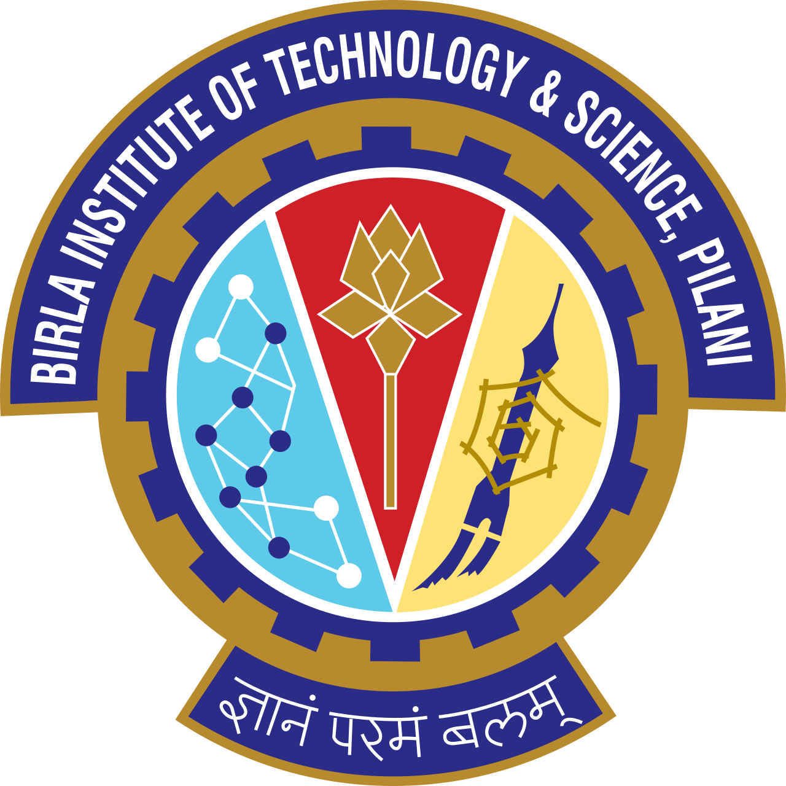

Aadit Deshpande
(he/him)
LTI, 6th floor, Gates and Hillman Centers, CMU☀️
Contact: aaditd [at] andrew.cmu.edu
GitHub: aadit3003
LinkedIn: Aadit Deshpande
Resume (PDF)
Last Updated: Sep 2024
Theme by orderedlist
About Me
Hi! I'm Aadit Deshpande, a graduate student pursuing a Master's degree in NLP and Machine learning at the Language Technologies Institute, Carnegie Mellon University (graduating Dec 2024). At CMU, I have developed a strong foundation in machine learning, LLMs, and multilingual NLP. I have applied these skills to my research on extended text generation linguistics, and machine translation. Through my software development internships at Siemens DISW and American Express AI Labs, I have experience working in highly agile development teams to deploy cloud-based/open-source LLMs in end-to-end RAG pipelines. I have worked on putting ML products into production in fields like FinTech, Engineering applications, and Medicine/biotech. I'm currently on the job market for MLE roles! Please feel free to reach out :)
At CMU, these are my guiding principles and goals for my NLP research:
- Range: To gain experiences across all levels of language processing. from Search Engines (shallow language processing) to various NLP tasks, to linguistics and morphosyntax for e.g. my work on LLM phonology evaluation with Prof. David Mortensen.
- Depth: To understand the nuances of LLMs and text generation in depth, such as my extensive work on aintaining consistency in medical note generation with Prof. Carolyn Rose.
- Diversify: To explore different modalities/languages such as my project on Speech translation systems with Prof. Shinji Watanabe.
Right before joining CMU I graduated from Birla Institute of Technology and Science, Pilani (BITS Pilani ), India with a Bachelors degree in Computer Science. During my final year at BITS, I was an NLP intern at American Express, AI Labs, where I developed an end-to-end Reddit insights pipeline. At BITS, I did research on deep learning applications in healthcare: privacy-preserving split learning (IoT Lab, Prof. Vinay Chamola) and biomedical feature selection/retinal image processing (Prof. Sundaresan Raman).
Outside of work, I do digital art. I am passionate about the inclusion of LGBTQ+ folks üè≥Ô∏è‚Äçüåà in tech and I've previously volunteered with QueerinAI.
Education
|
Carnegie Mellon University, Pittsburgh, PA
Master of Science in Intelligent Information Systems (December 2024) Concentration: ML, NLP GPA: 4.17/4.3 |
|
Birla Institute of Technology and Science, Pilani
B.E. Computer Science (May 2023) GPA: 9.64/10 |
Experience
|
Simens DISW
SDE Intern, Product Engineering Software May 2024 - August 2024 End-to-end Video Retrieval Augmented Generation (RAG) pipeline. |
|
Teledia Research Group, LTI, CMU
Graduate Research Project August 2023 - May 2024 Advisor: Prof. Carolyn Rosé 1). Synthetic Medical Note generation 2). Maintaining consistency in extended LLM text-generation |
|
American Express, AI Labs
Data Science Analyst Intern, Credit and Fraud Risk Division July 2022 - Dec 2022 Reddit insights pipeline (Unsupervised intent detection) |
Updates
Semester 3
- Aug 2024: Started my capstone project on low-resource medical translation with Prof. Lei Li and Prof. Lori Levin.
- Aug 2024: Started final semester at LTI CMU!.
Summer
- Aug 2024: Concluded Siemens DISW internship and my project on a Video RAG pipeline.
- May 2024: Started as a SDE Intern with Siemens DISW, in the NX LLM Integration team.
Semester 2
- May 2024: Finished second semester at CMU!
- Apr 2024: Demonstrated project on Cascaded vs. end-to-end S2ST models to Prof. Shinji Watanabe's group.
- Apr 2024: Presented research project on LLM rhyming capability to Prof. David Mortensen's group.
- Apr 2024: Gave a talk on Extended LLM text generation (medical personas) to Prof. Carolyn Rose's group.
- Jan 2024: Started as a TA for 10301/601 (Introduction to ML) with Prof. Henry Chai and Prof. Matt Gormley.
Semester 1
- Dec 2023: Finished first semester at CMU!
- Dec 2023: Submitted report on synthetic medical note generation, research work done with Prof. Carolyn Rose.
- Aug 2023: Joined LTI, CMU as a graduate student!
- May 2023: Graduated with B. Eng. Computer Science from BITS Pilani, India.
Projects
Evaluating the Rhyming capabilities of Large language models.
Aadit Deshpande, David Mortensen
[code][report][talk slides]
Cascaded vs. End-to-End Speech-to-Speech Translation systems.
Aadit Deshpande, Evan Fellman, Alexander Raskin, Sophia Topi
[code][report]
Maintaining Consistency in extended LLM text generation.
Aadit Deshpande, Carolyn Rose
[code][report][talk slides]
Split Learning for privacy-preserving healthcare, threat models and defensive techniques for decentralized learning.
Aadit Deshpande, Vinay Chamola
[code]
Unsupervised summary generation from social media posts with intent features (work done at AMEX, AI Labs)
Aadit Deshpande, Shreya Goyal, Prateek Nagwanshi, Avinash Tripathy
[paper]
An ImageJ macro tool for OCTA-based Quantitative Analysis of Myopic Choroidal Neovascularization.
Aadit Deshpande, Sundaresan Raman, Amber Dubey, Pradeep
[code][paper]
Teaching Experience
|
Machine Learning Department, CMU
Teaching Assistant for 10-601 Introduction to Machine Learning Semesters Taught: Spring 2024 Instructors: Hoda Heidari , Henry Chai, and Matt Gormley Course Website: 10-601 |
|  |
EEE Department, BITS Pilani
Teaching Assistant for CS F241 Microprocessors and Interfacing |